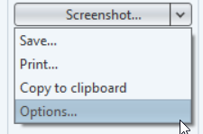
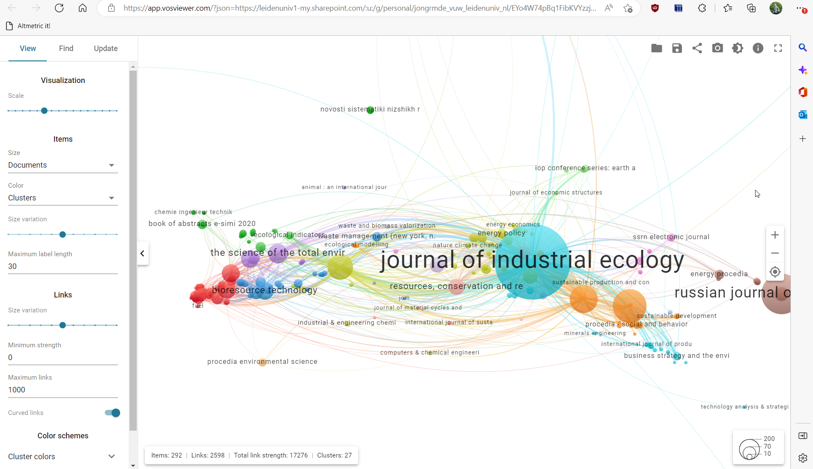
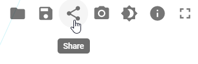
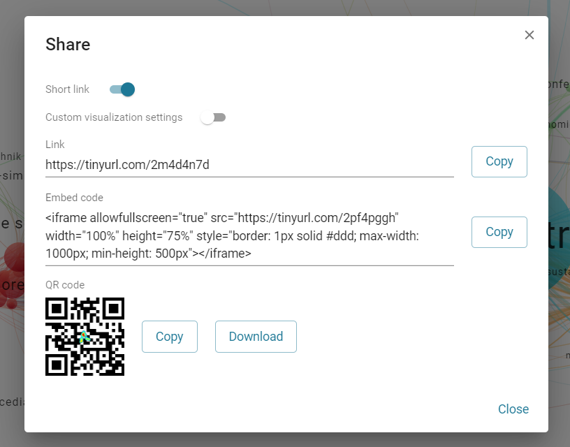

Chapter 4 Sharing your results
Visualizations from VOSviewer can be shared as image or as fully functional iframe on your website. However, visualizations should always be accompanied by some explanations on how to read them. In this chapter we give basic advise on sharing your data.
4.0.1 Basic information on the analysis
It is always important to show how you created your visualization. What search is it based upon, why did you choose these parameters, et cetera. By noting down this information you also help yourself if you want to make adjustments later (re-search).
Is is good practice to say in the comments what you were trying to accomplish, so other experts may help you refine your query if needed. You can use a template for this:
| Search Query | |
|---|---|
| Purpose | What research question are you trying to solve with this analysis? |
| Source | For example: Web of Science |
| Date | For example: 2023-01-23 |
| Search string | For example: ’“machine learn*” OR “Artificial Intelligence” |
| Filters inclusion | For example: Document Type=‘Journal Article’, Time=‘2018-now’ |
| Filters exclusion | For example: Journal=‘PLoS One’ |
| Number of results | # |
| Comments | Any other search specifics and/or the reason for this specific database and query |
4.0.2 Sharing a visualization: as image
- The screenshot function literally gives you the ability to make a screenshot of the current view (so the zoomed in or out image) of VOSviewer. It is therefore important to zoom in and scroll to the right position for the visualization you want to show. You can use the mouse or the buttons at the right top of the viewer to do this.
img
- If the labels on your visualization are overlapping, there is a trick to change the visualization a little. For this go to the left column, choose the ‘Analysis’ tab. Uncheck the default values checkbox for the Layout and set attraction to 1 and repulsion to 0. Don’t forget to update the layout! (and change the viewer again if necessary)
img
Depending on where you want to share, you might need a bigger figure (for print for example) than your screen offers. In the left column go to the ‘File’ tab. Click on the right part of the ‘Screenshot’ button and choose options. 
Here you can choose how you want to export your image. 200 per cent scaling for example, means the image has width*height=2*2=4 times the resolution from the one on your screen.
img
- To save the image, click the screenshot button.
4.0.3 Sharing an interactive visualization
VOSviewer also allows you to share your visualization as interactive element on websites. For this you need to upload the visualization to a cloud service such as Google Drive and then add code for an iframe to your website.
In the left menu of VOSviewer choose the ‘File’ tab. Right clicking the Share button gives you the ability to upload to Google Drive, Dropbox or the university supported Microsoft OneDrive. In this example I choose Onedrive.
The application will ask you to login or confirm. Once this is done the file is automatically uploaded and we are forwarded to the basic analysis of our VOSviewer screen (note overlays ore not yet possible). 
In the upper right corner is a share icon. Click it and you will find several options for sharing. 
The iframe gives you the possibility to embed a visualization on your website. If your website does not support iframes, a link is another option. 
As iframe:
4.0.4 Explaining your visualization
People with some expertise in the field can usually follow more or less what the visualization is about once they know the purpose and input. However, it is strongly recommended to explain the visualization.
In order to explain the visualization, it usually helps to mention the large clusters. What are they? can you explain them? What do they tell you about your initial research question (as mentioned in the first step).